Mexico
I was originally born in Mexico, so I have luckily been able to visit many times. My family lives in Guanajuato so we normally go around that area. My favorite area is
Queretaro, I was born there and for a short time grew up there. I have been to Cancun once because it was a special occasion, but I hope to get to go again.The following are
pictures from some of my trips.
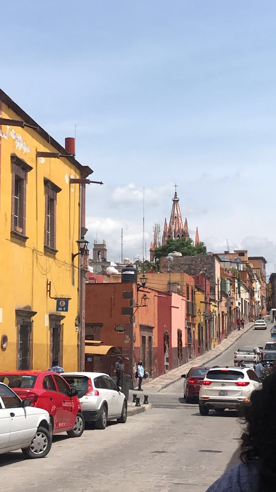
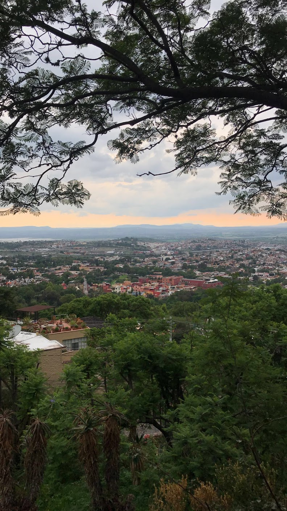
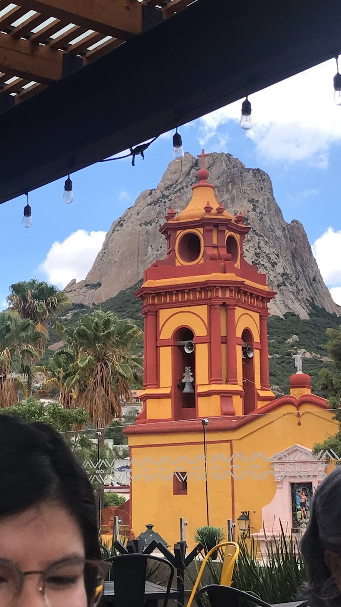
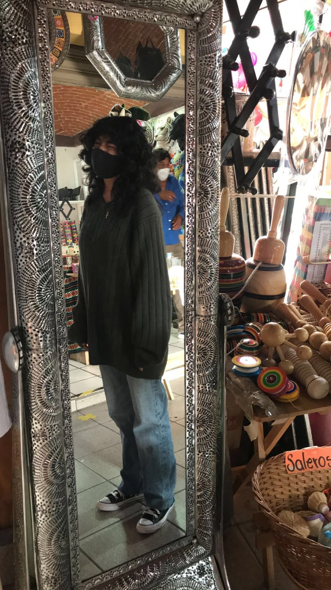
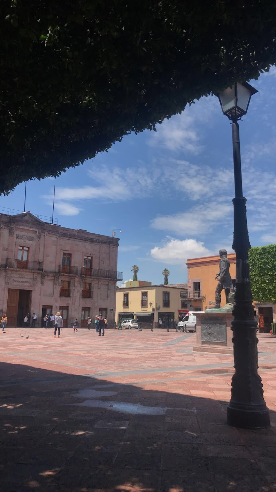
Europe
One Thanksgiving break we went to Europe for a week. We visited Berlin and France, it was a bit cold but it didn't stop us from exploring as much as we could. I, personally,
liked Berlin more than France. This might be a bit of a hot take, but I think Paris is overrated. I feel like Berlin is much richer and it has more to offer. Food was
a miss besides the drinks. I had the best hot wine in Berlin, it was perfect.
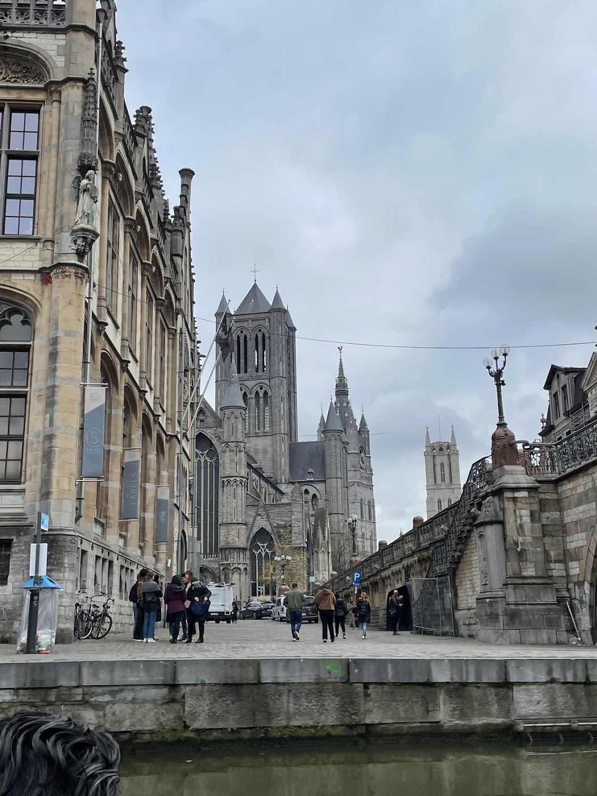
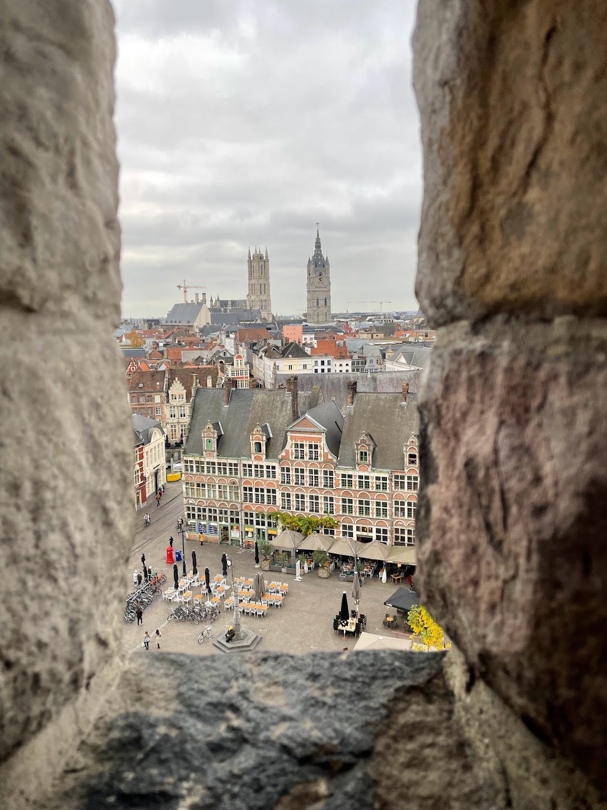
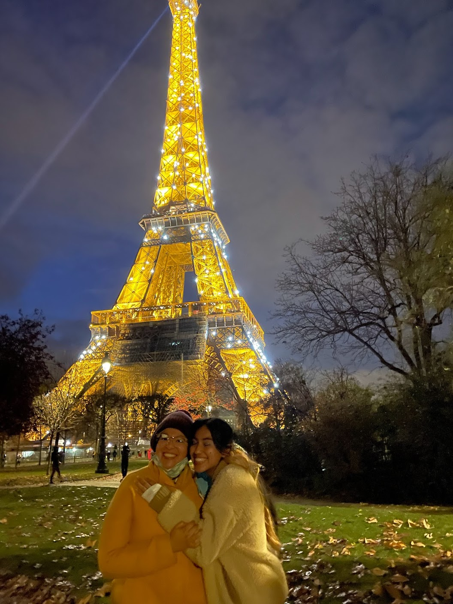
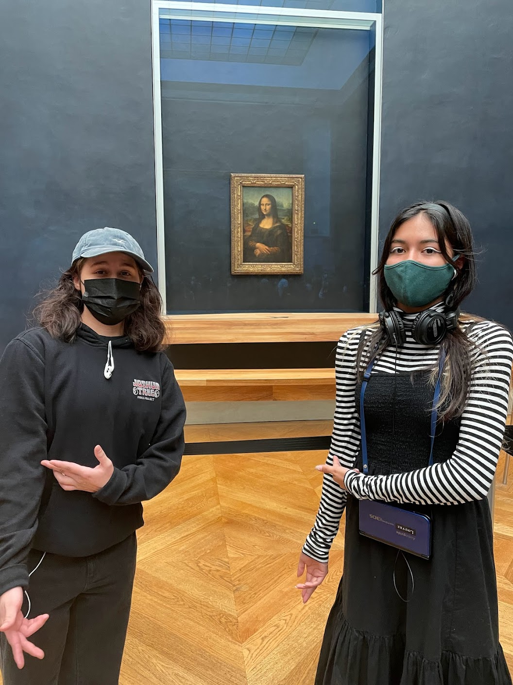
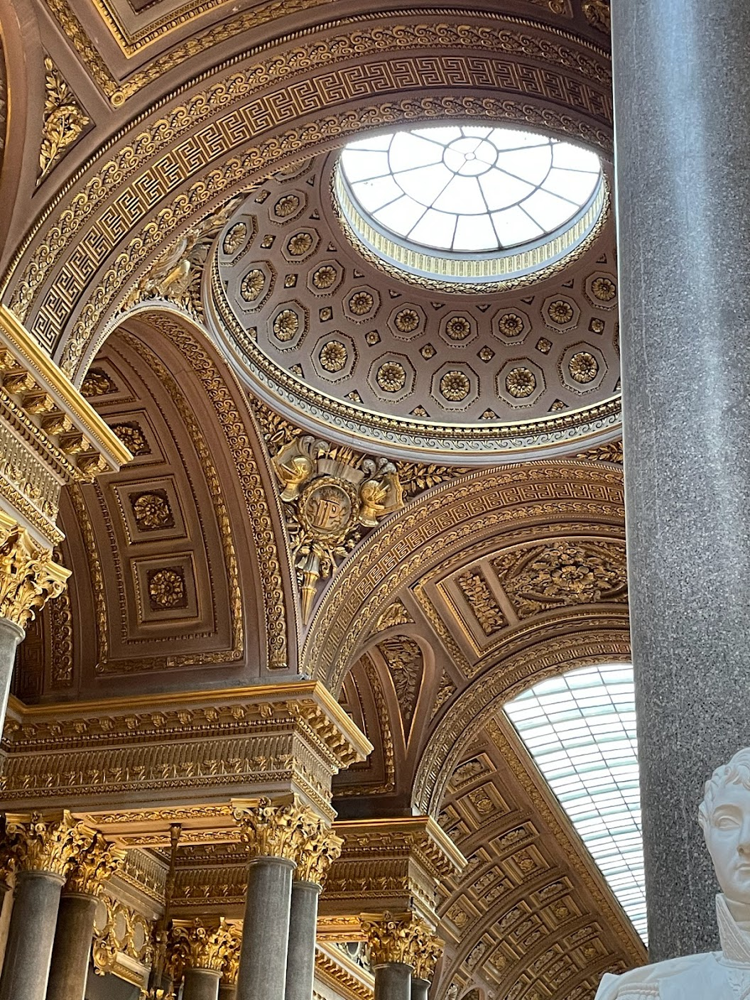
 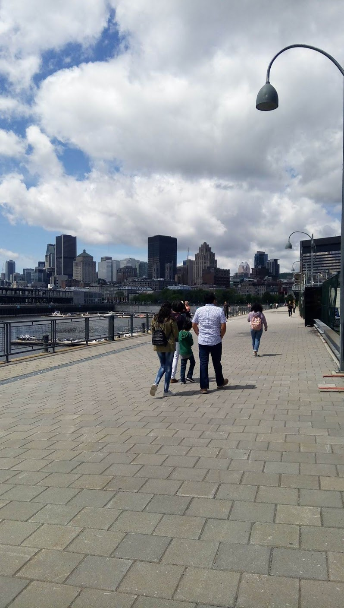
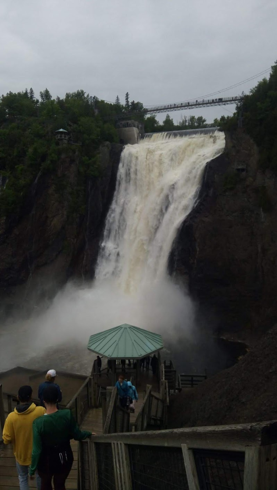
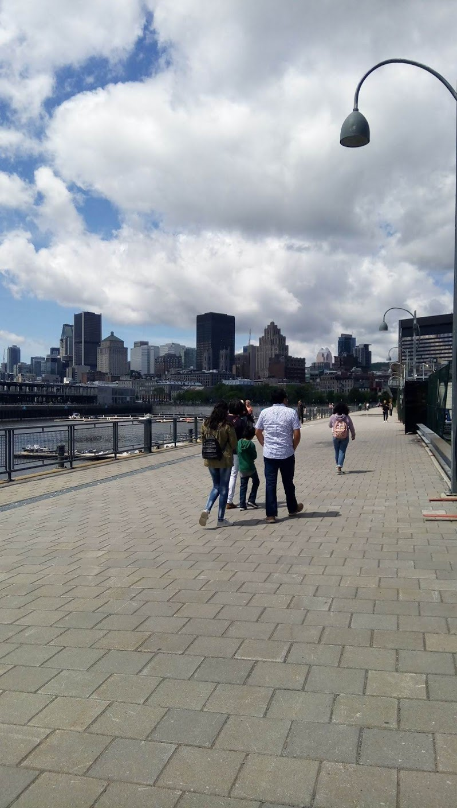
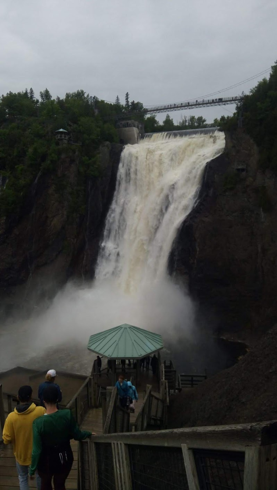